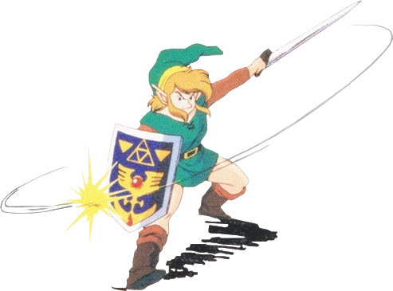
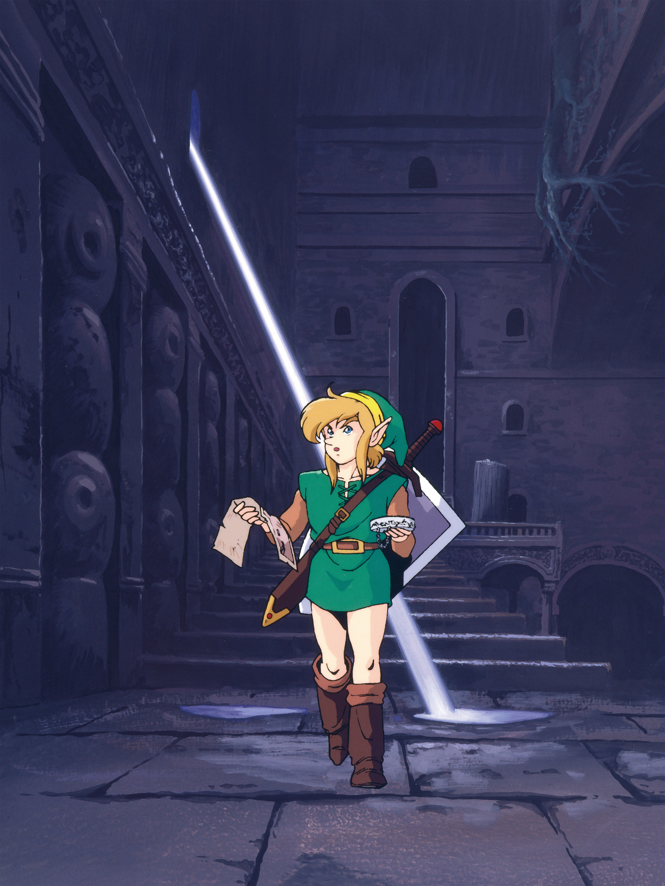
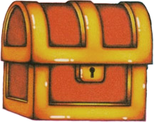
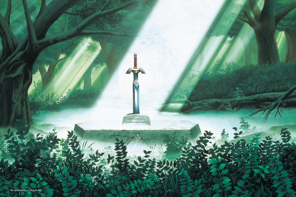
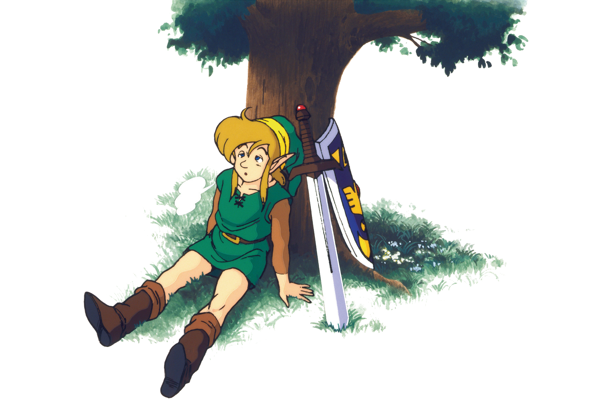

01 核心循环

核心问题
ALttP 的核心游戏循环是什么？这个循环如何在十几个小时的流程中持续制造"再走一步"的冲动，而不让玩家感到重复？
机制描述
ALttP 的循环不是单一的，而是四个嵌套层级的循环，每一层有不同的时间尺度和心流状态：
四层嵌套循环：从秒级操作到完整流程，每一层在不同时间尺度上驱动玩家前进
第一层：微循环（秒级）—— 移动→遭遇→反应
玩家在地图上移动，遭遇敌人或环境障碍，做出反应（战斗/闪避/使用道具），继续前进。
这是最原子层的循环。在表世界，这个循环通常是轻松的——多数敌人威胁不大，玩家可以边走边打。在地下城里，这个循环的紧张度急剧上升——每个房间都是一次小型遭遇战。

第二层：中循环（分钟级）—— 房间→钥匙/谜题→新区域→下一个房间
这是地下城内部的核心循环：
中循环：每个房间构成一个完整的问题解决单元，四步完成后进入下一个房间
每个地下城由 10-30 个这样的循环组成。地图和指南针帮助玩家定位，钥匙和大钥匙构成进度门。

第三层：宏循环（小时级）—— 探索表世界→进入地下城→获得能力→解锁新区域
这是 ALttP 最核心的循环，也是整个塞尔达系列"配方"的基石：
宏循环：每次获得新能力后返回表世界解锁新区域，形成持续探索驱动力
关键机制是物品即钥匙：每个重要物品既是战斗工具/解谜工具，也是打开地图新区域的"钥匙"。回旋镖可以眩晕敌人，也可以击落远处的道具；钩爪可以跨越悬崖，也可以触发远处的开关；力量手套可以搬起石头阻挡敌人，也可以搬开挡路的巨石进入新区域。
这个循环的具体体现：
| 阶段 | 玩家行为 | 心流状态 |
|---|---|---|
| 探索表世界 | 自由漫游，寻找目标 | 好奇、放松 |
| 进入地下城 | 线性推进，逐房清关 | 专注、紧张 |
| Boss 战 | 模式识别与反应 | 高度集中、紧张峰值 |
| 获得新物品 | 能力解锁的兴奋感 | 成就感、期待 |
| 返回表世界 | 用新能力探索之前到不了的地方 | 发现的喜悦 |
表世界和地下城的交替本身就是节奏控制：地下城是高压的线性关卡，表世界是低压的自由探索。两者交替出现，形成紧张-释放的节奏。


第四层：元循环（整个流程）—— 三幕结构
ALttP 的完整流程是一个清晰的三幕结构：
第一幕：序章（Hyrule Castle 逃脱）
- 时长：约 30 分钟
- 功能：教学关卡。无物品选择，线性推进，教会玩家基本操作
- 结束：救出 Zelda，到达圣域，获得第一个目标（寻找大师之剑）
第二幕：Light World（3 个迷宫 + Hyrule Castle Tower）
- 时长：约 3-4 小时
- 结构：收集三个挂坠 → 获得大师之剑 → 对抗 Agahnim → 被投入 Dark World
- 关键转变：从"被引导的新手"过渡到"理解了游戏规则的老手"
第三幕：Dark World（7 个迷宫 + Ganon's Tower）
- 时长：约 8-10 小时
- 结构：解救 7 位少女 → 进入 Ganon's Tower → 最终 Boss
- 关键变化：地图翻倍（Dark World 是新地图），敌人更强，谜题更复杂，但核心循环不变
三幕之间的转折点是游戏设计最精巧的部分——从 Light World 被投入 Dark World 的瞬间，玩家突然发现自己站在一个完全陌生的世界中，之前积累的地图知识变得部分失效。但游戏机制没变，玩家对循环的理解没变，所以玩家不会感到迷失，只会感到兴奋。

设计分析
循环为什么有效
1. 每一轮循环都产生"可见的进展"
宏循环中，每一轮完成都会永久改变玩家的状态：新物品、新能力、新可达区域。这种不可逆的进展感是驱动力的核心——玩家永远不会觉得"白做了"。
2. 循环的嵌套结构制造了多层奖励
微观循环给出即时奖励（击杀敌人掉落卢比/心/弹药），中观循环给出阶段性奖励（新钥匙/新房间），宏观循环给出重大奖励（新物品/新区域）。三个层级的奖励叠加，确保玩家在任何时间尺度上都有正向反馈。
3. 表世界给予"选择权"，地下城给予"完成感"
表世界的自由探索满足玩家的自主性需求（"我想去哪就去哪"），地下城的线性推进满足完成感需求（"我打通了！"）。两种体验交替出现，互为调剂。
4. "障碍记忆"机制
当玩家在表世界遇到无法通过的障碍时，会形成记忆："这里有块大石头挡着""这里有个悬崖过不去"。当获得对应能力后，这些记忆被激活，产生强烈的"回去看看"的冲动。游戏不需要标记或任务日志——玩家的好奇心本身就是任务系统。
为什么"障碍记忆"比显式任务系统更好？
显式任务系统（任务日志、地图标记、导航箭头）告诉玩家"去哪里"——探索变成了执行指令。障碍记忆让玩家自己决定"什么时候回去"——探索保持自主性。前者是设计师替玩家做决策，后者是设计师创造条件让玩家自己做决策。
但障碍记忆有严格的前提条件：世界必须足够小，小到玩家能凭记忆定位障碍的位置。ALttP的Light World约64屏、Dark World约64屏，玩家走过2-3遍就能在脑中建立清晰的空间索引。当世界规模超出这个阈值时，障碍记忆失效——玩家记不住"那个悬崖到底在哪"，回去的冲动无法转化为行动。这就是《旷野之息》转向塔/祠作为显式引导标记的原因：它的世界约3600屏，远超人类空间记忆的舒适区。
这个对比揭示了一个深层原理：引导方式的选择取决于世界的规模和复杂度。小世界用隐式引导（障碍记忆），大世界用显式引导（标记/任务），因为玩家的记忆容量是有限的。选择错误的引导方式——在大世界里依赖障碍记忆，或在小世界里堆砌任务标记——都会损害探索体验。
循环在 Dark World 的升级
进入 Dark World 后，核心循环不变，但增加了新的维度：
- 世界切换成为新的探索工具——某些位置需要"在 Light World 站位 → 用魔法镜切换到 Dark World"才能到达
- 物品的"钥匙"功能被双重放大——同一件物品在两个世界都有可解锁的区域
- 之前在 Light World 学到的地形知识在 Dark World 部分适用（地形拓扑相同），部分失效（视觉和敌人完全不同），创造了"熟悉又陌生"的体验
这种"用同一套循环规则在不同环境中运转"的设计，是用最小规则集产出最大体验变化的典范。
"回溯探索"的三层设计
注意"障碍记忆"（本节第4点）和04_进度系统的"物品即钥匙"是同一设计原则的两个面：
- 障碍记忆是动机层——解释了玩家为什么会回去
- 物品即钥匙是机制层——解释了玩家怎么回去
- 一物多用（09 元素协同）是效果层——解释了回去之后发现什么
三个层面共同构成了ALttP回溯探索的完整设计。如果只有动机层（玩家想回去但没办法）、只有机制层（玩家能回去但不想回去）、或只有效果层（回去之后没有惊喜），回溯探索都会失效。三层同时存在且相互加强，是ALttP探索循环如此有效的根本原因。
设计过程推导
ALttP 的循环结构不是凭空发明的，而是对前作的纠错与精炼。
NES 初代塞尔达的问题：
初代塞尔达（1986）的表世界是完全开放的，9 个地下城中有多个可以以非预设顺序攻略。这给了玩家极大的自由度，但也导致新手经常不知道该去哪，经常走进难度远超当前能力的区域。
Zelda II 的方向：
Zelda II（1987）转向横版动作+RPG，偏离了初代的俯视角探索体验，玩家反响两极。
ALttP 的解决方案： 推测
策划需要在"自由探索的快感"和"引导新手的需要"之间找平衡：
- 约束1：不能再像初代那样完全开放，新手会迷路
- 约束2：不能做成纯线性，那会丧失探索乐趣
- 约束3：SNES 卡带容量有限，内容不能无限膨胀
→ 方案：半线性结构。地下城之间有软性的顺序约束（物品能力作为进度门），但表世界的探索是自由的。玩家可以到处走、到处看，只是在没有对应能力时无法进入某些地下城。
→ 双世界方案解决了约束3：用同一张地图的两套视觉/敌人配置，产出双倍的探索体验，而不需要双倍的关卡设计工作量。
这个平衡点的选择是 ALttP 对系列最大的贡献之一——后续几乎所有塞尔达正作都沿用了这个"线性骨架 + 自由探索"的结构。
反事实推演
假设：移除"物品作为钥匙"的机制，改为每个地下城只需要达到特定等级就能进入。
后果：
- 表世界探索失去核心驱动力——没有了"这里有个障碍我记得"的记忆触发，探索变成漫无目的的游荡
- 地下城之间变成纯粹的线性排列（只要等级够了就能进下一个），丧失了发现"原来这个物品能打开那条路"的惊喜
- 物品退化为纯战斗工具，失去了"一物多用"的协同深度
→ 结论："物品即钥匙"是 ALttP 核心循环的脊柱，移除它后整个宏循环崩塌为普通的线性关卡游戏。
可迁移经验
设计游戏时，不要只设计一个循环。在三个时间尺度上设计独立的反馈循环：
- 秒级：即时反馈（打击感、拾取、视觉特效）
- 分钟级：阶段性目标（一关、一战、一局）
- 小时级：长期进展（能力解锁、区域开放、剧情推进）
三个层级的奖励机制相互独立但互不干扰，确保玩家在任何时刻都有"再走一步"的理由。
操作步骤：
- 列出游戏中玩家能获得的所有奖励类型
- 将每个奖励分类到三个时间尺度（即时/阶段/长期）
- 检查每个尺度是否至少有2种不同的奖励类型
- 如果某个尺度缺乏奖励，从其他尺度"借用"并调整频率（如把长期奖励的一部分前置为阶段奖励）
不需要任务日志或标记系统。在世界中放置可见但不可通过的障碍，让玩家自然形成"我要回来这里"的记忆。当玩家获得对应能力后，这些记忆自动转化为动机。
这种设计的前提是：障碍必须是视觉上可识别的（一块大石头、一个悬崖、一堵可炸的墙），且获得能力时要有明确的提示（"你现在可以搬起石头了！"）。
当你需要延长游戏时长时，不要增加新的系统。把同一个核心循环放到一个新的环境中运行：
- 新地图（Dark World）
- 更高的难度
- 旧能力的新用途
玩家已经学会了规则，现在需要在新环境中重新应用它们。这比教玩家全新的规则高效得多，且能产生"技能成长"的满足感。
高压区域（线性、密集挑战）和低压区域（自由、散点式探索）的交替是天然的节奏控制。如果没有这种交替，要么玩家持续紧张导致疲劳，要么持续放松导致无聊。
补充材料
补充材料
数据参考
- 全游戏约 13 个地下城（Light World 5个 + Dark World 8个，其中 Hyrule Castle 在技术上是两个地下城）
- 首通时长约 15-20 小时，速通 No Major Glitches 约 1 小时 23 分
- 物品总数约 40 种（含消耗品和瓶装物品），其中核心进度物品约 15 种
- Light World 地下城产出 3 个挂坠（获得大师之剑），Dark World 地下城解救 7 位少女（开启 Ganon's Tower）